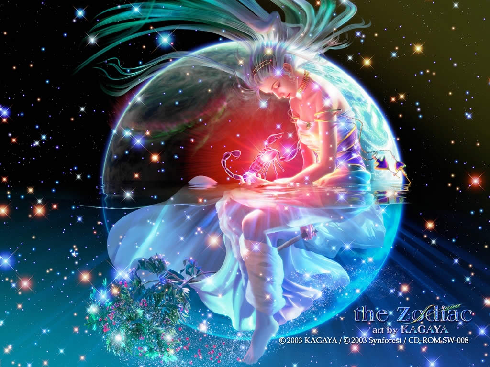
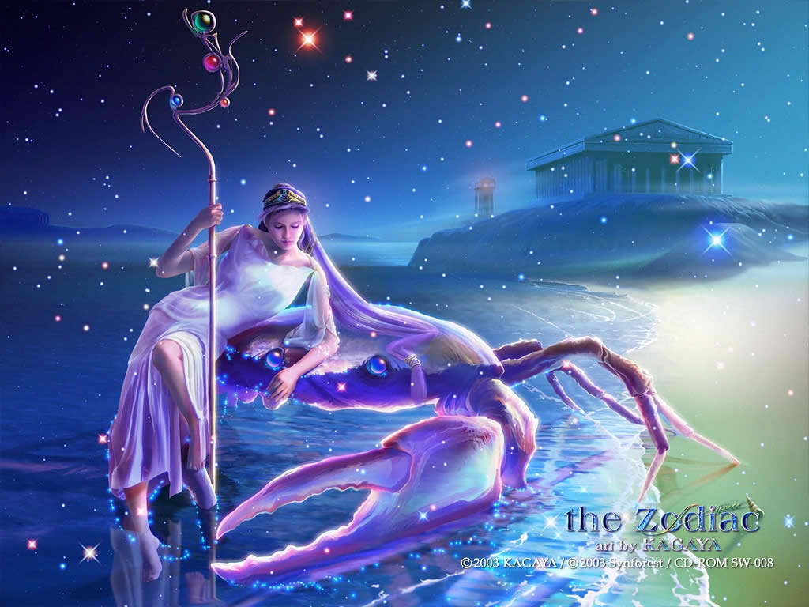
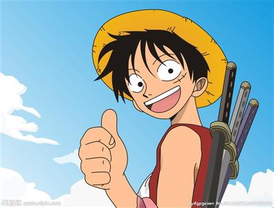

-
 张君桃
张君桃
1、最灵繁的人也看不见自己的背脊。――非洲 2、最困难的事情就是认识自己。――希腊 3、有勇气承担命运这才是英雄好汉。――黑塞 4、与肝胆人共事，无字句处读书。――周恩来 5、阅读使人充实，会谈使人敏捷，写作使人精确。――培根 1、那些年我们 在一起容易 相处难。喜欢一个容易 忘记一个要的是时间而已。 2、我们没有再说过话 不对表我没再想你 试着疏远你 只因我知道我不能再拥有你。 3、朋友可以变成恋人，而恋人却无法变成朋友 4、时间 会沉淀最真的情感。风雨 会考验最暖的陪伴。 5、没有音乐，生活是一种遗憾，没有爱心，生命是一种多佘。 6、世界上的某一个角落，一直有一个傻子喜欢着一个疯子。 7、你知道吗，我在想你。 就这么简单一句话，而已。 8、心最痛的时候其实最懂你的是另一个自己。 -

高婧
6、最大的骄傲于最大的自卑都表示心灵的最软弱无力。――斯宾诺莎 7、自知之明是最难得的知识。――西班牙 8、勇气通往天堂，怯懦通往地狱。――塞内加 9、有时候读书是一种巧妙地避开思考的方法。――赫尔普斯 10、阅读一切好书如同和过去最杰出的人谈话。――笛卡儿 11、越是没有本领的就越加自命不凡。――邓拓 12、越是无能的人，越喜欢挑剔别人的错儿。――爱尔兰 9、人需要自我倾听，自己说给自己的话，会最真，最浩荡。 10、我在努力的变成你喜欢的样子，可是你却告诉我你爱的是她。 11、辉煌时刻谁都有，别拿一刻当永久。 12、生活有时是令人沮丧的，但你可以努力让自己的过得开心。 13、曾经谈天说地的朋友终于被时光拉出了一条天堑。 14、心若没有了归宿，到哪里都是流浪。 15、心里伤没伤 只有自己才清楚* 16、一个人的时候，在陌生的街头，抬头看着繁星夜垂的天空。 17、最好不见最好不念如此才可不与你相恋つ 18、如果时间一直走的那么快我怎么对你依赖 -

于淼
13、知人者智，自知者明。胜人者有力，自胜者强。――老子 14、意志坚强的人能把世界放在手中像泥块一样任意揉捏。――歌德 15、最具挑战性的挑战莫过于提升自我。――迈克尔・F・斯特利 16、业余生活要有意义，不要越轨。――华盛顿 17、一个人即使已登上顶峰，也仍要自强不息。――罗素・贝克 18、最大的挑战和突破在于用人，而用人最大的突破在于信任人。――马云 19、自己活着，就是为了使别人过得更美好。――雷锋 -
 李虎
李虎
20、要掌握书，莫被书掌握；要为生而读，莫为读而生。――布尔沃 21、要知道对好事的称颂过于夸大，也会招来人们的反感轻蔑和嫉妒。――培根 22、业精于勤，荒于嬉；行成于思，毁于随。――韩愈 23、一切节省，归根到底都归结为时间的节省。――马克思 24、意志命运往往背道而驰，决心到最后会全部推倒。――莎士比亚 25、学习是劳动，是充满思想的劳动。――乌申斯基 26、要使整个人生都过得舒适、愉快，这是不可能的，因为人类必须具备一种能应付逆境的态度。――卢梭 27、只有把抱怨环境的心情，化为上进的力量，才是成功的保证。――罗曼・罗兰 -
 刘将
刘将
28、知之者不如好之者，好之者不如乐之者。――孔子 29、勇猛、大胆和坚定的决心能够抵得上武器的精良。――达・芬奇 30、意志是一个强壮的盲人，倚靠在明眼的跛子肩上。――叔本华 31、只有永远躺在泥坑里的人，才不会再掉进坑里。――黑格尔 32、希望的灯一旦熄灭，生活刹那间变成了一片黑暗。――普列姆昌德 33、希望是人生的乳母。――科策布 34、形成天才的决定因素应该是勤奋。――郭沫若 19、哭出了声，才知道自己是多么的弱小。 20、万物皆有裂痕，那是光照进的地方。 21、我只有一遍一遍看你们的甜言蜜语，才能让自己的心痛到麻木。 22、总有一天，你的棱角会被世界磨平，你会拔掉身上的刺，你会学着对讨厌的人微笑。 23、花开花落，我一样会珍惜。 24、疏影横斜水清浅， 暗香浮动月黄昏。 25、其实我挺羡慕恩尚，阿叹是她白马王子，崔英道是她黑骑士，灿荣是她蓝颜！ 26、曾经，以为爱一个人就是一生一世，牵他的的手，一起老去。后来，终于在眼泪中懂得，爱若烟花，刹那芳菲，太真太美又太短暂，来不及眨眼，泪就落下了。 27、你仍是我的软肋，却不在是我的盔甲。 -

曹越
35、学到很多东西的诀窍，就是一下子不要学很多。――洛克 36、自己的鞋子，自己知道紧在哪里。――西班牙 37、我们唯一不会改正的缺点是软弱。――拉罗什福科 38、我这个人走得很慢，但是我从不后退。――亚伯拉罕・林肯 39、勿问成功的秘诀为何，且尽全力做你应该做的事吧。――美华纳 40、学而不思则罔，思而不学则殆。――孔子 41、学问是异常珍贵的东西，从任何源泉吸收都不可耻。――阿卜・日・法拉兹 42、只有在人群中间，才能认识自己。――德国 43、重复别人所说的话，只需要教育；而要挑战别人所说的话，则需要头脑。――玛丽・佩蒂博恩・普尔 44、卓越的人一大优点是：在不利与艰难的遭遇里百折不饶。――贝多芬 -
王腾飞
35、学到很多东西的诀窍，就是一下子不要学很多。――洛克 36、自己的鞋子，自己知道紧在哪里。――西班牙 37、我们唯一不会改正的缺点是软弱。――拉罗什福科 38、我这个人走得很慢，但是我从不后退。――亚伯拉罕・林肯 39、勿问成功的秘诀为何，且尽全力做你应该做的事吧。――美华纳 40、学而不思则罔，思而不学则殆。――孔子 41、学问是异常珍贵的东西，从任何源泉吸收都不可耻。――阿卜・日・法拉兹 42、只有在人群中间，才能认识自己。――德国 43、重复别人所说的话，只需要教育；而要挑战别人所说的话，则需要头脑。――玛丽・佩蒂博恩・普尔 44、卓越的人一大优点是：在不利与艰难的遭遇里百折不饶。――贝多芬 -
 王亚飞
王亚飞
35、学到很多东西的诀窍，就是一下子不要学很多。――洛克 36、自己的鞋子，自己知道紧在哪里。――西班牙 37、我们唯一不会改正的缺点是软弱。――拉罗什福科 38、我这个人走得很慢，但是我从不后退。――亚伯拉罕・林肯 39、勿问成功的秘诀为何，且尽全力做你应该做的事吧。――美华纳 40、学而不思则罔，思而不学则殆。――孔子 41、学问是异常珍贵的东西，从任何源泉吸收都不可耻。――阿卜・日・法拉兹 42、只有在人群中间，才能认识自己。――德国 43、重复别人所说的话，只需要教育；而要挑战别人所说的话，则需要头脑。――玛丽・佩蒂博恩・普尔 44、卓越的人一大优点是：在不利与艰难的遭遇里百折不饶。――贝多芬